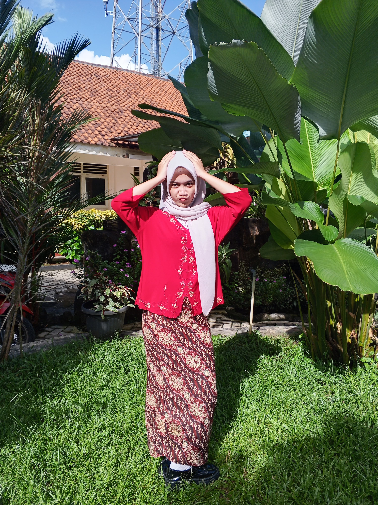
Sebuah cerita tentang masa yang kembali hadir.
...
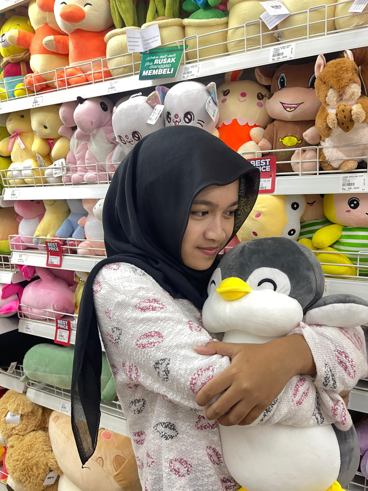
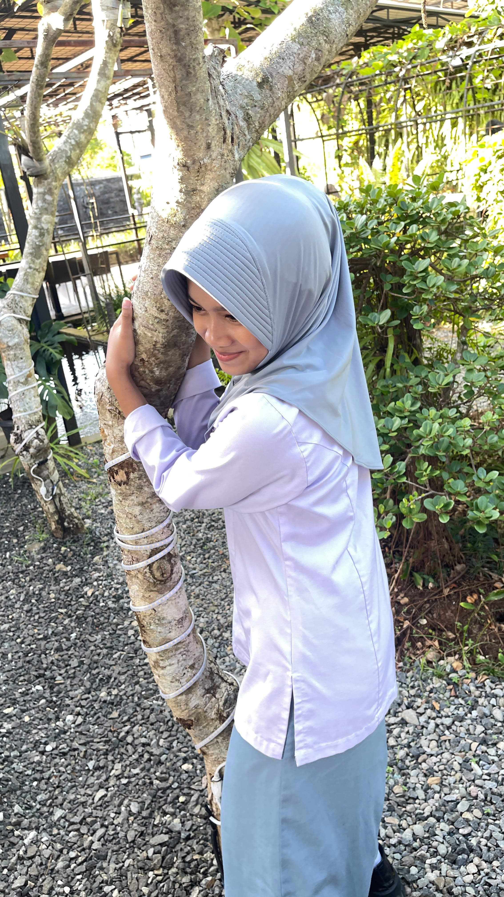
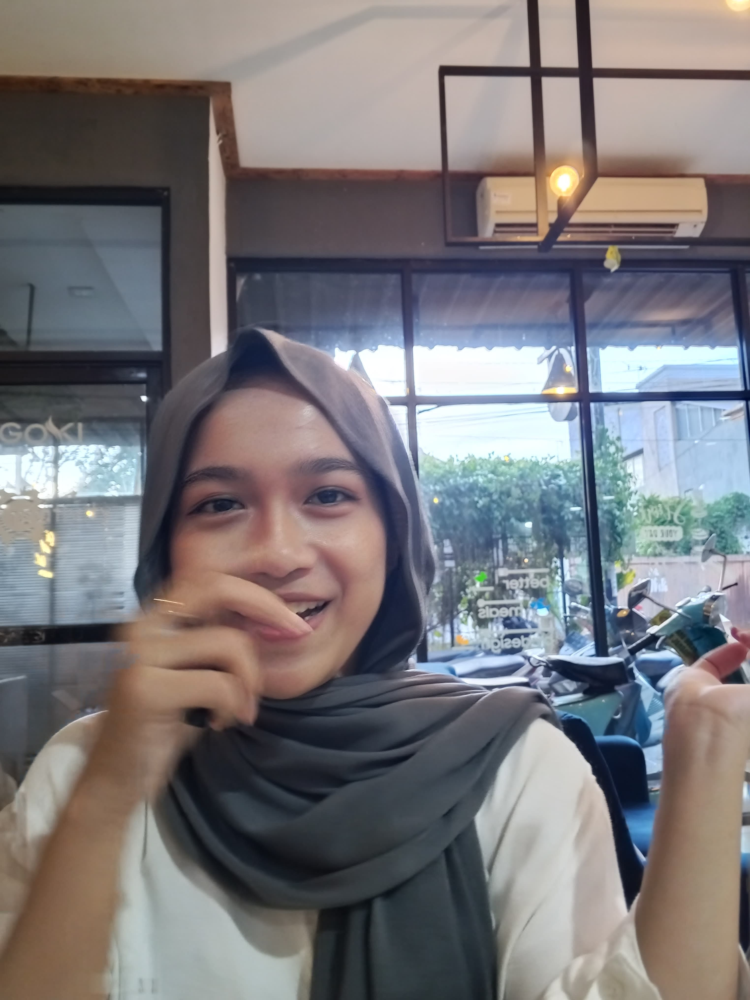
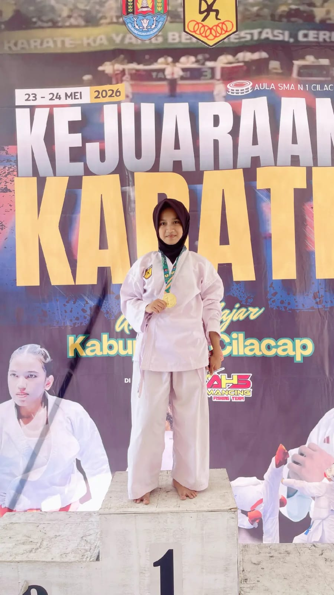
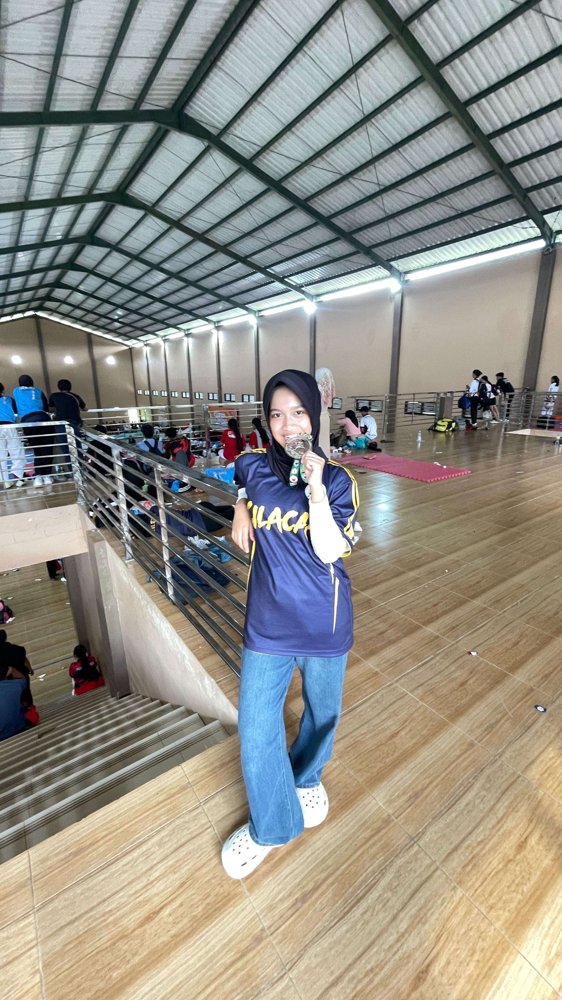
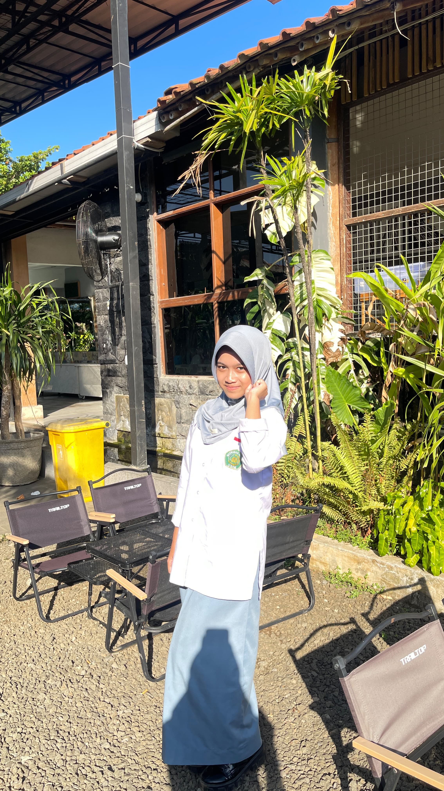
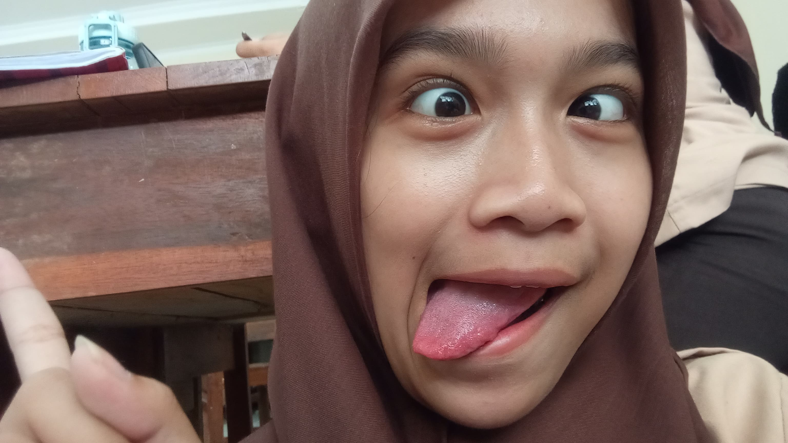
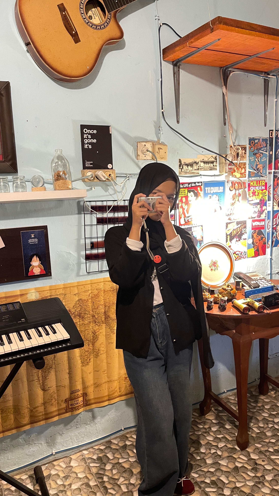
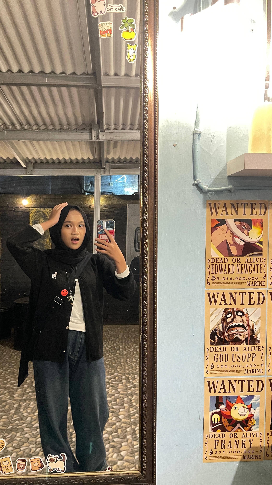
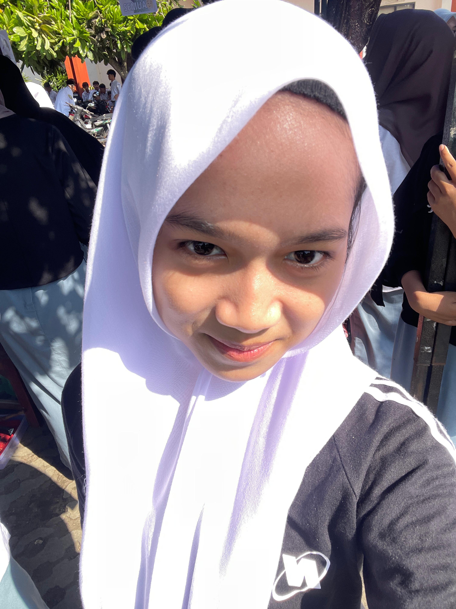
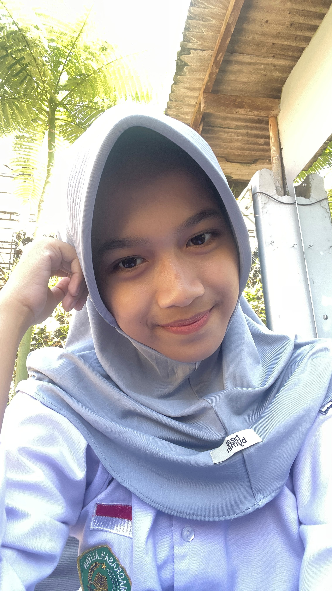
Terima kasih sudah lahir menjadi Bilqis Nurhisania.
Terima kasih karena tetap kuat.
Terima kasih karena tetap bertahan.
Terima kasih karena tetap menjadi dirimu sendiri.
Dan terima kasih karena pernah hadir di hidupku.
— Erlangga Azfa Saputra